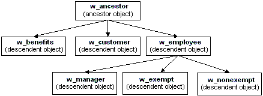

When you build an object that inherits from another object, you are creating a hierarchy (or tree structure) of ancestor objects and descendent objects. Chapter 11, "Working with Windows," uses the example of creating two windows, w_customer and w_employee, that inherit their properties from a common ancestor, w_ancestor. In this example, w_employee and w_customer are the descendants.
The object at the top of the hierarchy is a base class object, and the other objects are descendants of this object. Each descendant inherits information from its ancestor. The base class object typically performs generalized processing, and each descendant modifies the inherited processing as needed.
An object can have an unlimited number of descendants, and each descendant can also be an ancestor. For example, if you build three windows that are direct descendants of the w_ancestor window and three windows that are direct descendants of the w_employee window, the hierarchy looks like this:
